Amigable, John Maxim, T.
Grade XII-HypertextPORTFOLIO IN EMPOWERMENT TECHNOLOGY
Submitted to: Angelica Pasilan UndangWeek 1 & 2
ICT(Information and Communication Technology) is what most of us use for our everyday use like Mobile Phones,Internet,etc... Philippines is dubbed as the "ICT Hub Of
Asia" because of its huge growth in ICT related jobs.
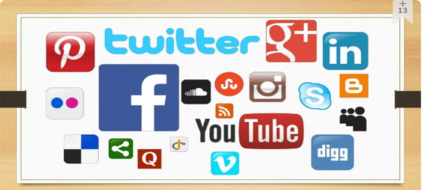
Online platform(s) is a structure/place/website that uses internet and these are where people can communicate,etc... The image above is the example of Online Platforms
9 Online Platforms
1. Assistive Media - created to help people who have visual and reading impairments.
2. Collaborative Platform - as a business software, ideal platform form a business.
3. Convergent Technologies - deals with the technologies converging or coming together to form another technology.
4. Information and Communications Technology - digital forms of communication.
5. Mobile Media - mobile phones as the primary source of portable media from which we could get information. There are many types of OS for Mobile devices namely, IOS, Android, Blackberry OS, Symbian, Windows Phone OS, WebOS, Windows Mobile.
6. Online Systems - online versions of information systems for sharing, managing, gathering of data and communications.
7. Social media - a website, application, or online channel that enables web users to create, co-create, discuss, modify, and exchange user-generated content.
8. Web 2.0 - dynamic web and a user generated platform. With features such as, Folksonomy(Also known as #(Hashtag)), RICH USER EXPERIENCE(content is dynamic), User Participation(The owner is not the only one who can access the website), Long tail(Services that are offered on demand rather than on a one-time purchase.), Software as service(subscribing to the service in the website).
9. Web 3.0 - The web, also known as the World Wide Web.
Trends in ICT
Convergence the synergy of technological advancements to work on a similar goal or task.
Social Media enables web users to create, co-create, discuss, modify, and exchange user-generate content.
6 TYPES OF SOCIAL MEDIA
Social networks - sites that allow you to connect to the other people with the same interests or background.
Bookmarking Sites - These are the sites that allow you to store and manage links to various websites and resources.
Social News - allow users to post their own news items or links to other news sources.
Media Sharing - allow you to upload and share media content like images, music, and video.
Micro blogging - focus on short updates from the user.
Blogs and Forums- allows users to post their content.
Summary
This Week is focused on Social media starting with ICT(Information and Communication Technologies) and why the philippines is the "ICT Hub of ASIA" and also talks about the 9 types of medias which are Assistive media,Collaborative Platform, Convergent Technologies, ICT, Mobile media, Online Systems, Social Media, Web 2.0 and 3.0. Also the Trends of ICT which are the Convergence and Social Media and lastly the six social medias Social networks, Bookmarking sites, Social news, Media Sharing Micro Blogging, Blogs and Forums.
Week 3&4
Internet - defined as the "Information Superhighway". Meaning anyone can place, access, grab informations through this highway.
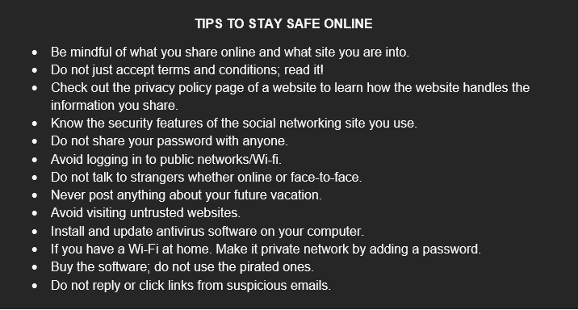
Online Safety is the practices and precautions that should be observed when using the internet because of CYBER THREATS which is a act performed by a knowledgeable individual also known as a "hacker" to illegally browse or steal information.
Malwares/Internet Threats
Virus - a malicious program designed to replicate itself from one computer to another. Worm - transfer from one computer to another from any means of virus. Trojan - disguised as a usefull program Adware - designed to send you advertisements mostly pop-ups. Spyware - a program that runs in the background without you knowing it. An example is a keylogger Spam - a unwanted email mostly from bots/advertisers. Phishing - acquires sensitive personal information. Pharming - more complicated that Phishing, exploits the DNS system.
Summary
This week is focused on the safety of a user when and giving knowledge to the user about Cyber THREATS such include Virus, Worm, Trojan, Adware, Spyware, Spam, Phishing, Pharming.
Week 5
Mail Merge is a feature allowing users to merge other documents with other documents. With the FORM DOCUMENT that contains the main body of the message you want to convey or send.
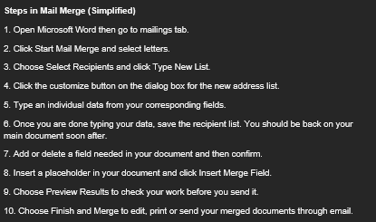
There are Three Components in Mail Merge:
1. Main Document - the letter which contain the main information for each of the merged documents.
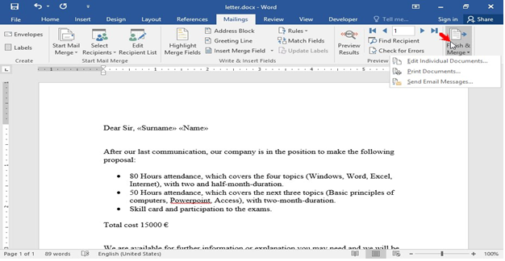
2. Data Source - also called data file which comprises the information to be merged into a document such as the list of names and addresses to be use in a mail merge.
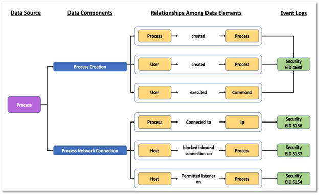
3. Merge Document – this is also a word processing document that is the generated output after executing the merge process.
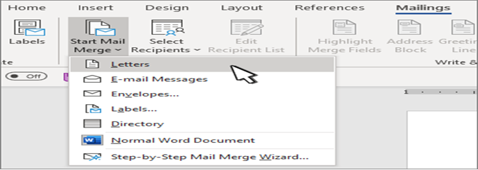
Summary
This week's module is focused on Merging mails and the advanced techniques in mails for sending mails more faster.
Week 6
Different Online Platforms
Presentation Tools - used to present ideas through slideshows. With examples such as Canva(provides templates for business), Powtoon(for creating short informational videos).
 File Management Platforms - Use to manage files/folder. Examples are Word2PDF, Zamzar.
Web Page Creation - a document suitable for World Wide Web and Web browser. Examples are WIX, WEEBLY.
File Management Platforms - Use to manage files/folder. Examples are Word2PDF, Zamzar.
Web Page Creation - a document suitable for World Wide Web and Web browser. Examples are WIX, WEEBLY.
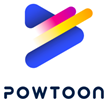
Cloud Computing - the delivery of different services through the internet these include tools and applications such as data storage, servers, etc...Examples are Google's Gmail, Google Drive ,Dropbox
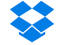
Mapping Tools - used to locate maps/locations. Examples are Google Maps, Wikimapia.
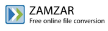
Social media - A website and application that enable user to create and share content or participate in social networking. Examples are Facebook, Instagram, Twitter.
Summary
This weeks modules is focused on the different online platforms and their examples.
Week 7 & 8
Online Creation Tools
Haiku Deck - was founded on the premise that simple, modern, and elegant slide decks should be the norm, instead of overly dense, difficult to read, and difficult to digest ones.
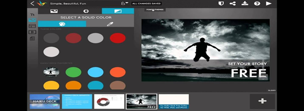
Prezi - a web-based tool for creating presentations (called prezis for short). It's similar to other presentation software like Microsoft PowerPoint.
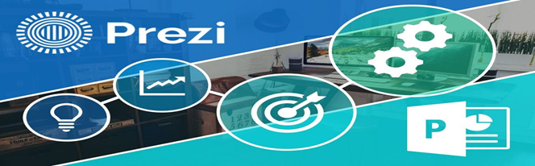
Google slides- It is use to create more slides and to make it more productive.
Online Platform - technologies that regrouped to be used as a base upon which other applications processes or technologies are developed.
Examples of Online Platform
• Presentation/Visualization - communicates information clearly and efficiently via statistical graphics, plots and information graphics.
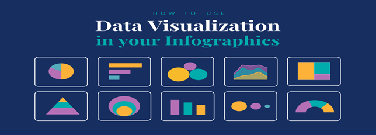
• Cloud Computing- helping to reinvent the art of presentation • Zoho – an online project management app that helps you plan your work and keep track of your progress.
• Social Media- to build quickly from concise, well- presented content from top experts.
• Web Page Creation - the practice of using a network of remote servers hosted on the internet to store, manage, and process data, rather than a local server or a personal computer.
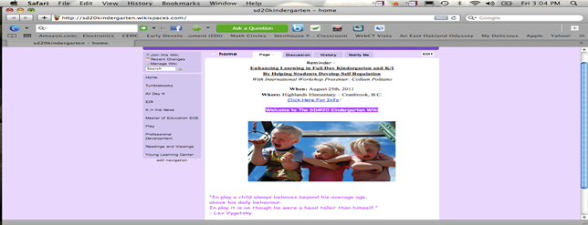
• File Management f. Mapping- keep all work in one secure place with online file storage • Dropbox – keeps your files safe, synced, and easy to share.
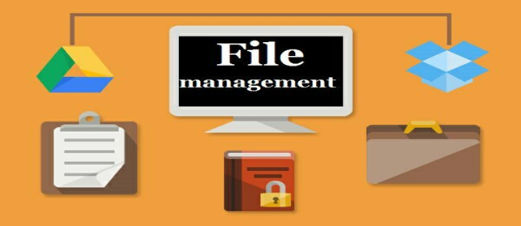
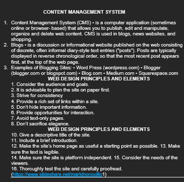
BASIC PRINCIPLES OF GRAPHICS AND LAYOUT CREATING INFOGRAPHICS
BALANCE -visual weight of objects, textures, color and space is evenly distributed.
EMPHASIS - an area in the design that may appear in different size, texture, shape, or color to attract the viewer’s attention.
MOVEMENT- visual elements guide the viewer’s eyes around the screen.
PATTERN, REPETITION, RHYTHM - repeating visual element on an image or layout to create unity in the layout or image.
PROPORTION - visual elements create a sense of unity where they relate well with one another.
VARIETY - this uses several design elements to draw a viewer’s attention.
INFOGRAPHICS - Information graphics are used to represent information, statistical data or knowledge in a graphical manner usually done in a creative way to attract viewer’s attention.
Summary
This weeks modules explains the Different kinds of online creation tools, platforms, and the basic principles in graphics and layout creating infographics.